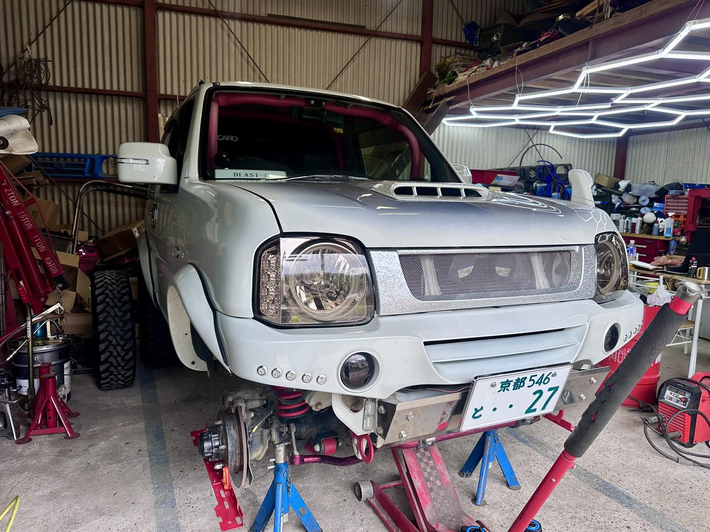

WORK 04
JB23 ロッドエンド交換とトー確認
/ 作業事例
整備記録 // JB23

経年でガタが出てきたステアリングのロッドエンド（タイロッドエンド）を、左右とも交換した整備記録です。 リフトアップされたJB23で、古い部品と新品を並べてみるとブーツの傷みが一目瞭然でした。
ロッドエンドはトー角（タイヤの向き）に直結する部品のため、交換して終わりにはできません。 テープメジャーでホイールセンター間の距離を前後で計測しながら、左右のロッドを調整してトーを確認しました。
作業風景
- 左右のロッドエンドのガタ・ブーツの状態を点検
- 古いロッドエンドを取り外し、新品に交換
- 新しいロッドエンドにブーツを組み付け、グリスアップ
- 割りピンで緩み止めを固定
- テープメジャーでホイールセンター間を計測し、トーを調整・確認
リフトアップ車ではロッドエンドのガタが出やすい傾向があります。詳しくはJB23 リフトアップの注意点もあわせてご覧ください。